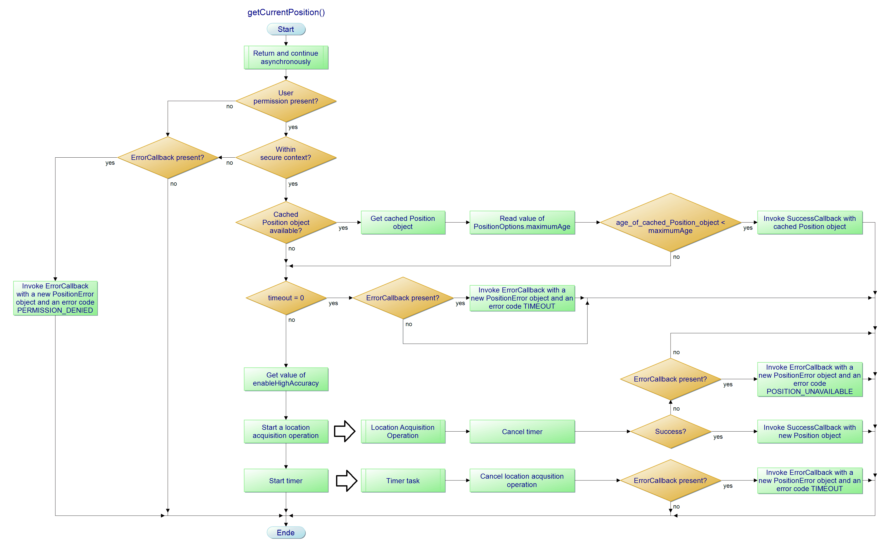

Eine einfache Konsolenausgabe
getLocation_in_console(boolean enableHighAccuracy, int maximumAge, int timeout);
\"\" ~ Infinity
Beispiele:
getLocation_in_console(false, 15000, 30000)
getLocation_in_console(false, "", 30000)
Algorithmus anzeigen
